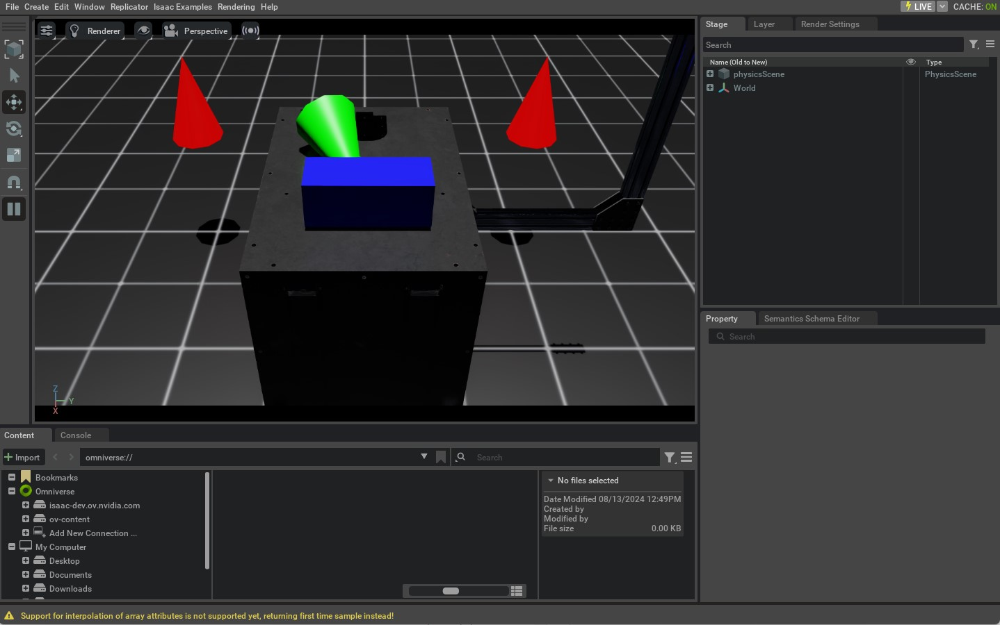

本教程介绍如何通过 Python 在 Isaac Lab 的 Scene 中生成不同的 Object（或 Prim）。内容承接上一节的独立脚本启动流程，并演示如何生成 Ground Plane、Light、基本几何体，以及如何从 USD 文件加载 Mesh。
1 代码
本教程对应 spawn_prims.py，位于 scripts/tutorials/00_sim 目录。
代码 spawn_prims.py
# Copyright (c) 2022-2026, The Isaac Lab Project Developers (https://github.com/isaac-sim/IsaacLab/blob/main/CONTRIBUTORS.md).
# All rights reserved.
#
# SPDX-License-Identifier: BSD-3-Clause
"""This script demonstrates how to spawn prims into the scene.
.. code-block:: bash
# Usage
./isaaclab.sh -p scripts/tutorials/00_sim/spawn_prims.py
"""
"""Launch Isaac Sim Simulator first."""
import argparse
from isaaclab.app import AppLauncher
# create argparser
parser = argparse.ArgumentParser(description="Tutorial on spawning prims into the scene.")
# append AppLauncher cli args
AppLauncher.add_app_launcher_args(parser)
# parse the arguments
args_cli = parser.parse_args()
# launch omniverse app
app_launcher = AppLauncher(args_cli)
simulation_app = app_launcher.app
"""Rest everything follows."""
import isaaclab.sim as sim_utils
from isaaclab.utils.assets import ISAAC_NUCLEUS_DIR
def design_scene():
"""Designs the scene by spawning ground plane, light, objects and meshes from usd files."""
# Ground-plane
cfg_ground = sim_utils.GroundPlaneCfg()
cfg_ground.func("/World/defaultGroundPlane", cfg_ground)
# spawn distant light
cfg_light_distant = sim_utils.DistantLightCfg(
intensity=3000.0,
color=(0.75, 0.75, 0.75),
)
cfg_light_distant.func("/World/lightDistant", cfg_light_distant, translation=(1, 0, 10))
# create a new xform prim for all objects to be spawned under
sim_utils.create_prim("/World/Objects", "Xform")
# spawn a red cone
cfg_cone = sim_utils.ConeCfg(
radius=0.15,
height=0.5,
visual_material=sim_utils.PreviewSurfaceCfg(diffuse_color=(1.0, 0.0, 0.0)),
)
cfg_cone.func("/World/Objects/Cone1", cfg_cone, translation=(-1.0, 1.0, 1.0))
cfg_cone.func("/World/Objects/Cone2", cfg_cone, translation=(-1.0, -1.0, 1.0))
# spawn a green cone with colliders and rigid body
cfg_cone_rigid = sim_utils.ConeCfg(
radius=0.15,
height=0.5,
rigid_props=sim_utils.RigidBodyPropertiesCfg(),
mass_props=sim_utils.MassPropertiesCfg(mass=1.0),
collision_props=sim_utils.CollisionPropertiesCfg(),
visual_material=sim_utils.PreviewSurfaceCfg(diffuse_color=(0.0, 1.0, 0.0)),
)
cfg_cone_rigid.func(
"/World/Objects/ConeRigid", cfg_cone_rigid, translation=(-0.2, 0.0, 2.0), orientation=(0.5, 0.0, 0.5, 0.0)
)
# spawn a blue cuboid with deformable body
cfg_cuboid_deformable = sim_utils.MeshCuboidCfg(
size=(0.2, 0.5, 0.2),
deformable_props=sim_utils.DeformableBodyPropertiesCfg(),
visual_material=sim_utils.PreviewSurfaceCfg(diffuse_color=(0.0, 0.0, 1.0)),
physics_material=sim_utils.DeformableBodyMaterialCfg(),
)
cfg_cuboid_deformable.func("/World/Objects/CuboidDeformable", cfg_cuboid_deformable, translation=(0.15, 0.0, 2.0))
# spawn a usd file of a table into the scene
cfg = sim_utils.UsdFileCfg(usd_path=f"{ISAAC_NUCLEUS_DIR}/Props/Mounts/SeattleLabTable/table_instanceable.usd")
cfg.func("/World/Objects/Table", cfg, translation=(0.0, 0.0, 1.05))
def main():
"""Main function."""
# Initialize the simulation context
sim_cfg = sim_utils.SimulationCfg(dt=0.01, device=args_cli.device)
sim = sim_utils.SimulationContext(sim_cfg)
# Set main camera
sim.set_camera_view([2.0, 0.0, 2.5], [-0.5, 0.0, 0.5])
# Design scene
design_scene()
# Play the simulator
sim.reset()
# Now we are ready!
print("[INFO]: Setup complete...")
# Simulate physics
while simulation_app.is_running():
# perform step
sim.step()
if __name__ == "__main__":
# run the main function
main()
# close sim app
simulation_app.close()
2 代码解析
Omniverse 使用 USD（Universal Scene Description）组织 Scene。USD 既是文件格式，也是一套用于分层描述 3D Scene 的系统，其层级结构类似文件系统。如果需要了解完整机制，建议阅读 USD 官方文档。
理解本教程前，需要先掌握以下几个 USD 基本概念。
Prim (Prims)：这些是 USD Scene 的基本构建块。它们可以被认为是 Scene 中的Node 图表。每个Node可以是Mesh、Light、Camera 或 Transform。也可以是其下的一组其他Prims。
属性：这些是 Prim 的属性。它们可以被认为是Key-Value Pair。例如，Prim 可以 有一个属性称为
color值为red.Relationships：表示 Prim 之间的连接，可以理解为指向其他 Prim 的
pointer。例如，Mesh Prim 可以通过 Relationship 关联 Material Prim，以指定着色材质。
Prim、Attribute 和 Relationship 共同组成 USD Stage。可以把 Stage 理解为容纳 Scene 中全部 Prim 的容器；设计 Scene，本质上就是构建 USD Stage。
直接使用 USD API 灵活度很高，但学习和使用成本也较高。Isaac Lab 因此在 USD API 之上提供由 Configuration 驱动的 Prim 生成接口，相关实现位于 sim.spawners Module。
生成 Prim 时，需要创建相应的 Configuration Class 实例，用于描述 Prim 的属性、材质及其他关系。随后将该配置、目标 Prim Path 和 Transform 传给对应的 Spawner Function，由其把 Prim 添加到 Scene。
从整体上看，调用流程如下：
# Create a configuration class instance
cfg = MyPrimCfg()
prim_path = "/path/to/prim"
# Spawn the prim into the scene using the corresponding spawner function
spawn_my_prim(prim_path, cfg, translation=[0, 0, 0], orientation=[1, 0, 0, 0], scale=[1, 1, 1])
# OR
# Use the spawner function directly from the configuration class
cfg.func(prim_path, cfg, translation=[0, 0, 0], orientation=[1, 0, 0, 0], scale=[1, 1, 1])
本教程将演示多种 Prim 的生成方式。有关全部 Spawner，请参阅 Isaac Lab 中的 sim.spawners Module。
注意
所有 Scene 设计必须在 Simulation 开始之前进行。一旦 Simulation 启动，我们建议保留 Scene 被冻结，仅改变 Prim 的属性。这对于 GPU Simulation 尤为重要 因为在 Simulation 期间添加新的 Prims 可能会改变 GPU 上的物理 Simulation Buffers 并导致意外 行为。
2.1 生成 Ground Plane
GroundPlaneCfg 用于配置网格状 Ground Plane，可以设置尺寸和外观等属性。
# Ground-plane
cfg_ground = sim_utils.GroundPlaneCfg()
cfg_ground.func("/World/defaultGroundPlane", cfg_ground)
2.2 生成 Light
Stage 支持生成 Distant Light、Sphere Light、Disk Light 和 Cylinder Light 等多种 Light Prim。本教程使用 Distant Light；它位于无限远处，并沿固定方向照亮整个 Scene。
# spawn distant light
cfg_light_distant = sim_utils.DistantLightCfg(
intensity=3000.0,
color=(0.75, 0.75, 0.75),
)
cfg_light_distant.func("/World/lightDistant", cfg_light_distant, translation=(1, 0, 10))
2.3 生成 Primitive Shapes
生成基本几何体前，需要先了解 Transform Prim（Xform）。Xform 只保存变换属性，可以把多个子 Prim 组织为一组，并对整组应用 Transform。本例创建一个 Xform，用于归组后续生成的几何体。
# create a new xform prim for all objects to be spawned under
sim_utils.create_prim("/World/Objects", "Xform")
接着使用 ConeCfg 生成圆锥体。Configuration 可以设置半径、高度、物理属性和 Material；默认不启用物理与 Material 属性。
前两个圆锥体 Cone1 和 Cone2 仅用于显示，因此没有启用物理属性。
# spawn a red cone
cfg_cone = sim_utils.ConeCfg(
radius=0.15,
height=0.5,
visual_material=sim_utils.PreviewSurfaceCfg(diffuse_color=(1.0, 0.0, 0.0)),
)
cfg_cone.func("/World/Objects/Cone1", cfg_cone, translation=(-1.0, 1.0, 1.0))
cfg_cone.func("/World/Objects/Cone2", cfg_cone, translation=(-1.0, -1.0, 1.0))
第三个圆锥体 ConeRigid 通过 Configuration 启用 Rigid Body Physics。这些属性可用于设置质量、摩擦和恢复系数；未指定时使用 USD Physics 默认值。
# spawn a green cone with colliders and rigid body
cfg_cone_rigid = sim_utils.ConeCfg(
radius=0.15,
height=0.5,
rigid_props=sim_utils.RigidBodyPropertiesCfg(),
mass_props=sim_utils.MassPropertiesCfg(mass=1.0),
collision_props=sim_utils.CollisionPropertiesCfg(),
visual_material=sim_utils.PreviewSurfaceCfg(diffuse_color=(0.0, 1.0, 0.0)),
)
cfg_cone_rigid.func(
"/World/Objects/ConeRigid", cfg_cone_rigid, translation=(-0.2, 0.0, 2.0), orientation=(0.5, 0.0, 0.5, 0.0)
)
最后生成带 Deformable Body Physics 的长方体 CuboidDeformable。Deformable Body 的顶点可以相对运动，适合模拟布料、橡胶或果冻等 Soft Body。该功能仅支持 GPU Simulation，并要求 Mesh 配置相应物理属性。
# spawn a blue cuboid with deformable body
cfg_cuboid_deformable = sim_utils.MeshCuboidCfg(
size=(0.2, 0.5, 0.2),
deformable_props=sim_utils.DeformableBodyPropertiesCfg(),
visual_material=sim_utils.PreviewSurfaceCfg(diffuse_color=(0.0, 0.0, 1.0)),
physics_material=sim_utils.DeformableBodyMaterialCfg(),
)
cfg_cuboid_deformable.func("/World/Objects/CuboidDeformable", cfg_cuboid_deformable, translation=(0.15, 0.0, 2.0))
2.4 从文件加载 Asset
Prim 也可以从 USD、URDF 或 OBJ 等文件加载或转换。本教程把一个 Table USD Asset 加入 Scene；其 Mesh、Material 等信息均保存在 USD 文件中。
# spawn a usd file of a table into the scene
cfg = sim_utils.UsdFileCfg(usd_path=f"{ISAAC_NUCLEUS_DIR}/Props/Mounts/SeattleLabTable/table_instanceable.usd")
cfg.func("/World/Objects/Table", cfg, translation=(0.0, 0.0, 1.05))
该 Table 以 Reference 方式加入 Scene，即 Stage 保存的是指向 Asset 的引用，而不是复制全部内容。这样可以非破坏性地修改或覆盖 Material 等属性，而无需改写原始 Asset 文件。
3 执行 Script
与前面的教程一样，执行以下 Command 运行 Script：
./isaaclab.sh -p scripts/tutorials/00_sim/spawn_prims.py
Simulation 启动后，窗口中会显示 Ground Plane、Light、多个圆锥体和一张桌子。启用 Rigid Body Physics 的绿色圆锥体会落下，并与桌面和 Ground Plane 发生 Collision；其余圆锥体只用于显示，不会移动。关闭窗口或在 Terminal 中按 Ctrl+C 即可停止 Simulation。

本教程介绍了在 Isaac Lab Scene 中生成多种 Prim 的基本方法，并演示了 Scene 设计和 Spawner 的核心概念。下一节将进一步介绍如何与 Scene 和 Simulation 交互。